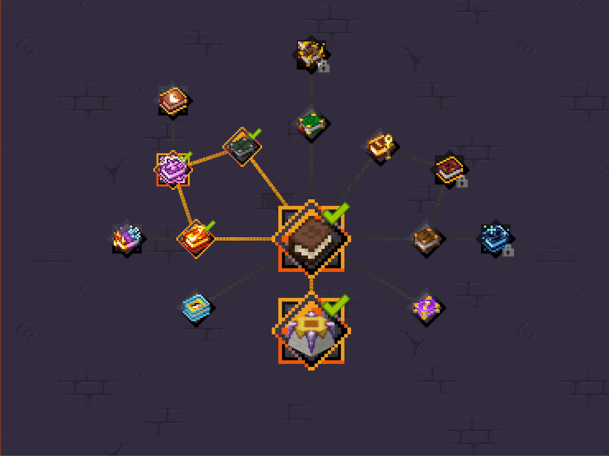
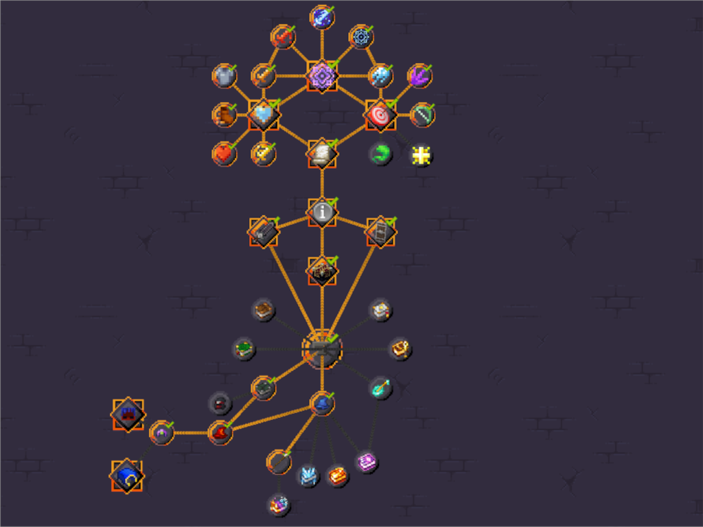
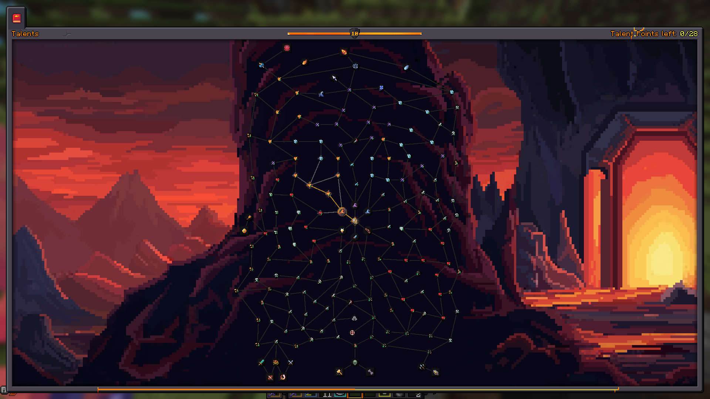
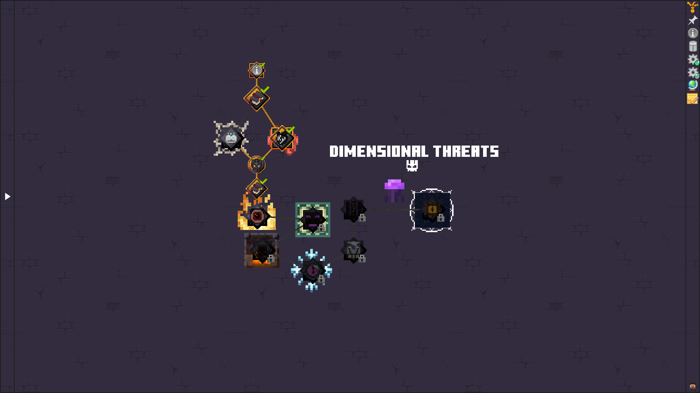
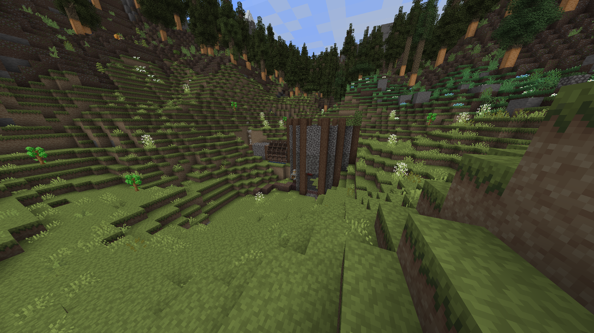

Prominence: Hasturian era
Performance
During my playtime of 60+hrs I had no problems with the modpack. On an older save I have completed the main bosses and on a newer one I am reaching the end of the early game. The Modpack should run on lower end pc-s as well, my partner whom I played this in coop with, had no problem running the pack, even on a 1050TI a weaker cpu and 16gb of ram.Content
The Modpack has huge amount of content in it, featuring bosses, some their own, some from other mods and tying them together in one story, how you are the Flameborn sent here by your creator to kill all bosses sent here by the void.
As you would have guessed, you dont go in with your fists (altough there is a class for that) you have Classes you can choose from, and as you progress through the game you can craft Armors and weapons with higher stats and bigger damage!


You can be a sneaky and fast Rogue a mighty or not so mighty warrior of different types, mages, archers, spellblades- and so on and so forth, all of them with different skills and playstyles.
If you have friends there are classes dedicated for multiplayer sessions as well such as a buffing bard, healing priest or tank paladins!
Main audience
It has a "strict" route to take, that many might not be fond of, however there is a little bit for everyone, featuring the create mod for example, if you wanna use it, you can no problem. However it is not mandatory. You need to defeat the bosses in an order dictated by the book tough. That might not be liked by everyone.
However if you like rpg-s and want to hop into an easy to grasp but hard to master mod, where any playstyle and game knowledge is welcome, you should try out this modpack, it will show you some of the most liked mods in terms of bosses, structures and exploration. If you are into technological mods however, you wont like this modpack too much.
Progression
Progression is tied to many aspects, levels, gear, bosses killed, and different setups such as enchanting
Levels at the start are locked to a maximum of 10 until you defeat the first boss, then its up until lvl 50 until you complete the first chapter after that I believe is level 70 as the highest cap currently, and you get 1 talent point to spend on the talent tree every 3 levels


On the topic of bosses, many of them drop weapons or items that may help you in your journey of defeating all the other bosses, so if you are prepared make sure to defeat one or two, it will greatly benefit you
Final Toughts
Prominence is a great modpack if you want to experience a medieval setting with strong fantasy bosses and or want to explore a wide world full of interesting structures and generation. Grab a few of your friends and you might even have more fun than I did!
As a final goodbye have a screenshot of my work in progress base!
